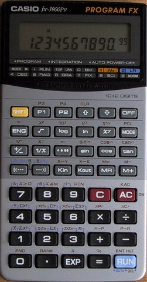

WebCal 計數機網頁
Casio fx-3900PV簡介

Casio fx-3900PV是舊款的會考計數機型號，現在已經停止生產。對於同系列的Casio計數機，它的內置功能較少，沒有基數模式及雙曲函數功能，亦沒有fx-50F及fx-3600PV的分數功能，不過這部計數有內置的積分功能，功能上相對上較為簡潔，操作上亦很容易，而且計數機的運算速度較快。
fx3900PV最大的優點相信是它的程式功能，共有四個程式位置 (P1、P2、P3及P4)，程式容量為300步，比同系列的fx-3800P(135步)、fx-3600PV(38步)及fx-50F(29步)多很多。輸入程式方面，除了可以使用學習模式(LRN)輸入外，還可以使用編輯模式(EDIT)輸入，對於要修改錯誤的程式相當方便及容易，亦因為這個原因，一些需要修改函數部份的程式(例如: 辛卜生定積分計算程式)，亦可以在這部計數機中執行，所以fx-3900PV的程式功能較同系列的fx-3800P、fx-3600PV及fx-50F明顯優勝。
fx-3900PV較特別之處是有方法可以大大提升程式的容量至大約1200步，程式只要經過特別的編寫(例如: N in 1 程式---一個將多個程式合併為一的程式)，實際上可以記存程式的數目可以很多，因此程式功能所帶來的好處會被大大增加。對於重視程式功能的會考朋友，這個好處相信會是相當吸引。
1. fx-3900PV程式集
4. 網站索引
5. 聯絡網主
有用連結:
以下網址為WaiYuen計數機網站的有關增大fx-3900PV程式容量的方法，大家可以試試。
http://waiyuen.mikekong.net/change.htm
以下網址為香港計數機科技協會有關fx-3900PV的資料，可以幫助大家了解、學習及應用這部計數機。
http://hk.geocities.com/hkact/download/casio.pdf